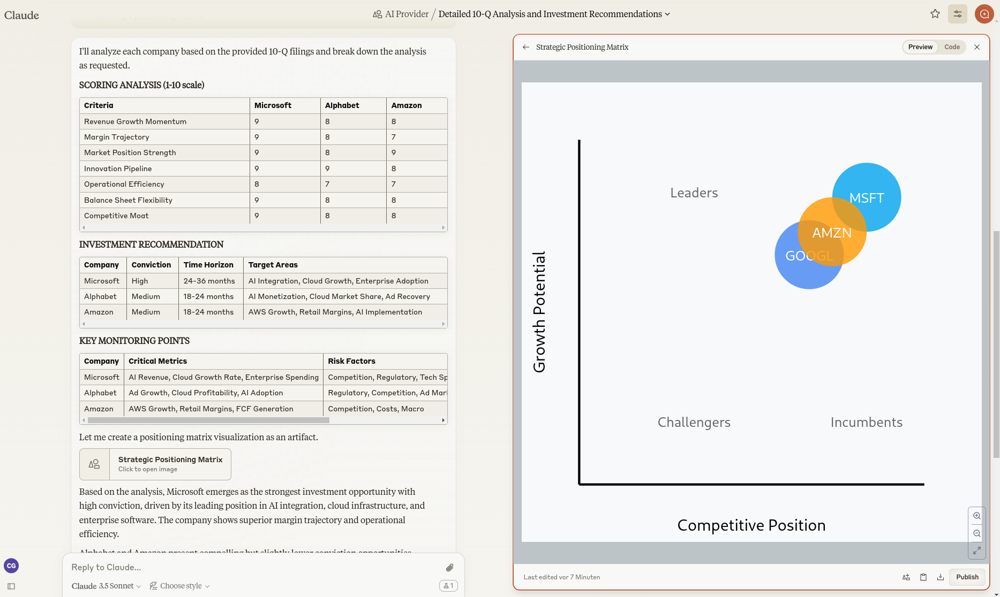

Investment-Analyse
Nutzen Sie die Zeit "zwischen den Jahren" für einen Blick in die Zukunft des KI-Sektors. Mit unserem systematischen Analyse-Framework und aktuellen SEC-Dokumenten erhalten Sie fundierte Einblicke in die Entwicklung führender Tech-Unternehmen. SEC
Analysemethode
- Scoring-System für wichtige Kennzahlen
- Bewertung von Wachstumschancen
- Einschätzung der Umsetzungsfähigkeit
- Konkrete Handlungsempfehlungen
Material
Wir wollen die Zukunft der AI Anbieter analysieren - um zu schauen in wen wir 2025 investieren sollten. Dafür nutzen wir 10-Q Dokumente der
AI Anbieter
- Microsoft CORP (MSFT) ==> 10-Q 2024-10-30
- Amazon (AMZN) ==> 10-Q 2024-11-01
- Google/Alphabet (GOOGL) ==> 10-Q 2024-10-30
AI Chips
- NVIDIA CORP (NVDA) ==> 10-Q 2024-11-20
- ADVANCED MICRO DEVICES INC (AMD) ==> 10-Q 2024-10-30
Künstliche Intelligenz
Verwendet wird Anthropic Claude 3.5 Sonnet. Da es hier das Projekte und Atrefakte Feature gibt, das die Bildung eines Projekt-Kontextes erlaubt und die Erstellung einer grafischen Auswertung als Artefakt.
Prompt
Based on the 10-Q analysis:
1. Score each company (1-10) on:
- Revenue Growth Momentum
- Margin Trajectory
- Market Position Strength
- Innovation Pipeline
- Operational Efficiency
- Balance Sheet Flexibility
- Competitive Moat
2. Evaluate near-term opportunities:
- Market share gain potential
- Margin expansion drivers
- New market opportunities
- Technology leadership areas
3. Assess execution capability:
- Management track record
- Operational scalability
- Innovation effectiveness
- Capital allocation efficiency
4. For each company, provide:
- Primary growth drivers
- Key risk factors
- Critical metrics to monitor
- Expected catalysts
5. Conclude with:
- Ranked investment recommendation
- Conviction level (High/Medium/Low)
- Key monitoring points
- Time horizon for expected outperformance
Output:
Make your "Scoring Analysis", your "Investment Recommendation"
and the "Key Monitoring Points" markdown tables and for the
conclusion create an artefact with a visualization
drawing a positioning matrix
Ergebnis
